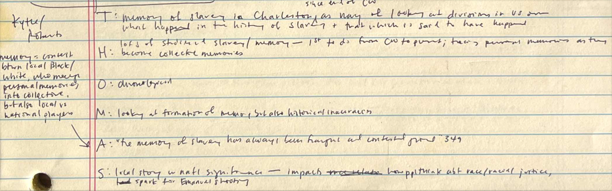
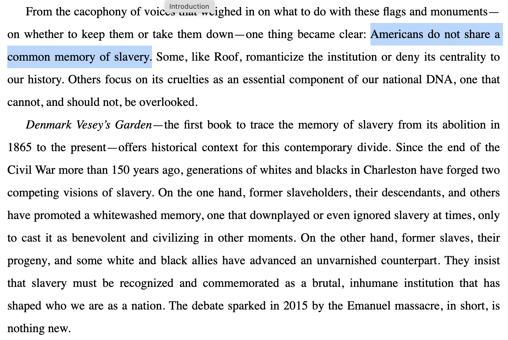
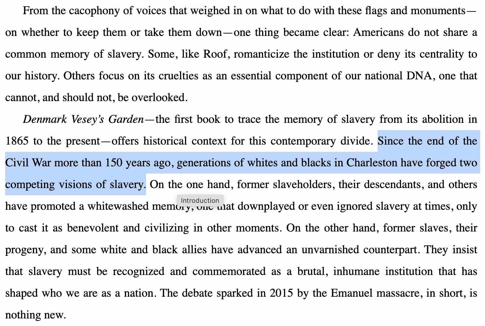
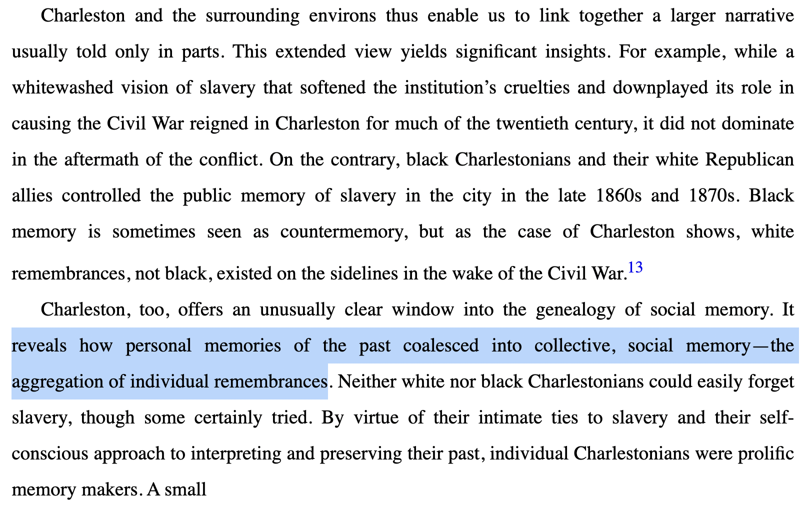
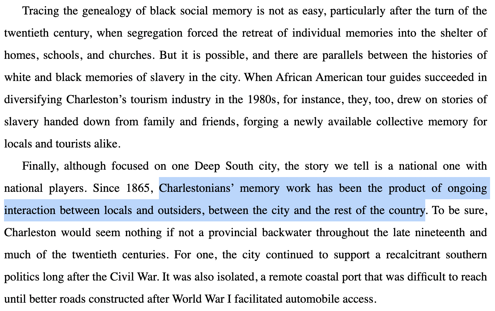
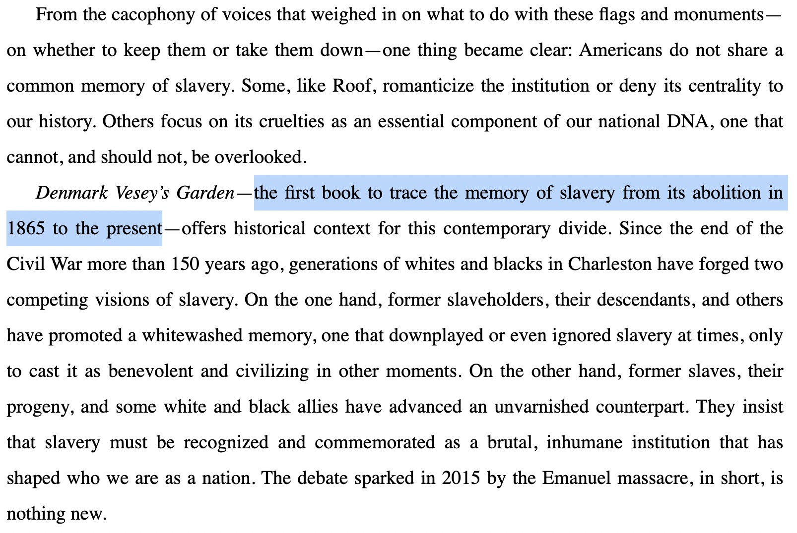
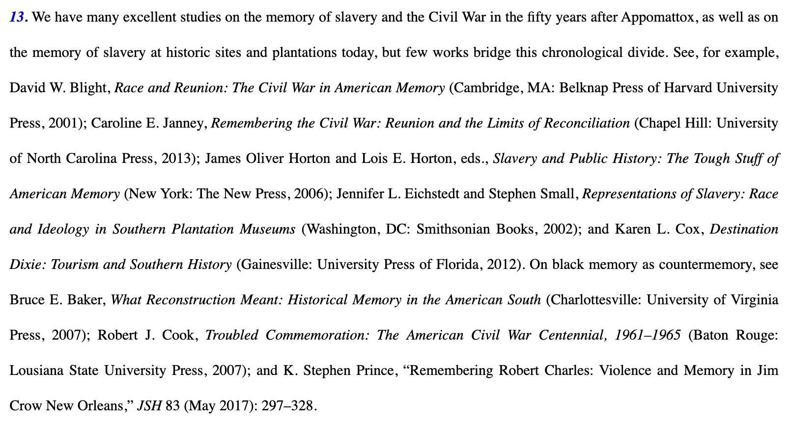
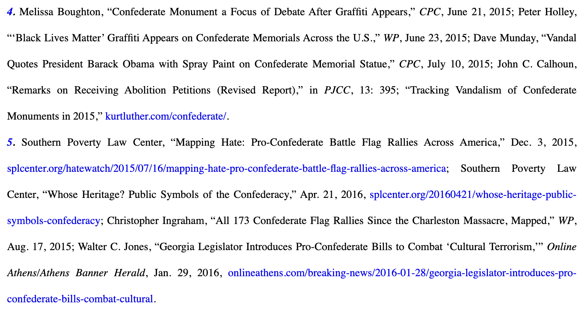

<!DOCTYPE html>
<html lang="en">
  <head>
    <meta charset="utf-8" />
    <meta name="viewport" content="width=device-width, initial-scale=1.0, maximum-scale=1.0, user-scalable=no" />

    <title></title>
    <link rel="stylesheet" href="dist/reveal.css" />
    <link rel="stylesheet" href="dist/theme/black.css" id="theme" />
    <link rel="stylesheet" href="plugin/highlight/zenburn.css" />
	<link rel="stylesheet" href="css/layout.css" />
	<link rel="stylesheet" href="plugin/customcontrols/style.css">


    <script defer src="dist/fontawesome/all.min.js"></script>

	<script type="text/javascript">
		var forgetPop = true;
		function onPopState(event) {
			if(forgetPop){
				forgetPop = false;
			} else {
				parent.postMessage(event.target.location.href, "app://obsidian.md");
			}
        }
		window.onpopstate = onPopState;
		window.onmessage = event => {
			if(event.data == "reload"){
				window.document.location.reload();
			}
			forgetPop = true;
		}

		function fitElements(){
			const itemsToFit = document.getElementsByClassName('fitText');
			for (const item in itemsToFit) {
				if (Object.hasOwnProperty.call(itemsToFit, item)) {
					var element = itemsToFit[item];
					fitElement(element,1, 1000);
					element.classList.remove('fitText');
				}
			}
		}

		function fitElement(element, start, end){

			let size = (end + start) / 2;
			element.style.fontSize = `${size}px`;

			if(Math.abs(start - end) < 1){
				while(element.scrollHeight > element.offsetHeight){
					size--;
					element.style.fontSize = `${size}px`;
				}
				return;
			}

			if(element.scrollHeight > element.offsetHeight){
				fitElement(element, start, size);
			} else {
				fitElement(element, size, end);
			}		
		}


		document.onreadystatechange = () => {
			fitElements();
			if (document.readyState === 'complete') {
				if (window.location.href.indexOf("?export") != -1){
					parent.postMessage(event.target.location.href, "app://obsidian.md");
				}
				if (window.location.href.indexOf("print-pdf") != -1){
					let stateCheck = setInterval(() => {
						clearInterval(stateCheck);
						window.print();
					}, 250);
				}
			}
	};


        </script>
  </head>
  <body>
    <div class="reveal">
      <div class="slides"><section  data-markdown><script type="text/template">
# *Denmark Vesey's Garden*</script></section><section  data-markdown><script type="text/template">## THOMAS</script></section><section  data-markdown><script type="text/template">### taking notes

<p style="line-height: 0" class="reset-paragraph image-paragraph"></img></p>


<aside class="notes"><ul>
<li>I like to write out the THOMAS structure on a piece of paper and then fill it in as I read the introduction and conclusion</li>
<li>this gives me something that I can work with as I skim the rest of the book<ul>
<li>I can add to and edit this as I go; more importantly, it gives me a framework so that, as I read, I can keep these things in mind</li>
<li>this helps me to interpret what I read by putting it in this framework, and also to focus on what&#39;s important</li>
<li>as I&#39;m reading, I can ask myself, why is the author talking about this? what is it doing to support their argument?</li>
</ul>
</li>
</ul>
</aside></script></section><section ><section data-markdown><script type="text/template">### Argument

not *always* explicitly stated

<aside class="notes"><ul>
<li>for Kytle/Roberts it&#39;s tough to nail down, which may be related to issues of audience as well as the press; The New Press is a non-profit publisher but still falls under the trade press category, and this may be the reason that the book doesn’t conform to conventions of academic writing in this way</li>
<li>this means that you might have to synthesize</li>
</ul>
</aside></script></section><section data-markdown><script type="text/template">|Academic Press | Trade Press|
|------ | ------|
|nonprofit | commercial|
|scholarly audience | general readership|
|packaging varies | packaged to sell|</script></section><section data-markdown><script type="text/template">*but* The New Press is a non-profit publisher that specializes in trade titles, so it's kind of in between these two broad categories 🤷🏻‍♂️</script></section></section><section  data-markdown><script type="text/template">many of you highlighted this as the argument:
<p style="line-height: 0" class="reset-paragraph image-paragraph"></img></p>

*Denmark Vesey's Garden*, Introduction, p. 4

<aside class="notes"><ul>
<li>why might this be the argument?<ul>
<li>it&#39;s in the introduction</li>
<li>it <em>sounds</em> like an argument</li>
</ul>
</li>
<li>why might this <em>not</em> be the main argument for the book?<ul>
<li>it&#39;s about the U.S. in general</li>
<li>it&#39;s a statement about the present day</li>
</ul>
</li>
</ul>
</aside></script></section><section  data-markdown><script type="text/template">why is this a better candidate for the argument?
<p style="line-height: 0" class="reset-paragraph image-paragraph"></img></p>

<aside class="notes"><ul>
<li>more specific statement, ties directly into topic of the book</li>
<li>this is an explicit statement, but it&#39;s still not <em>that</em> surprising—can we find more to this story?</li>
</ul>
</aside></script></section><section  data-markdown><script type="text/template">we can synthesize this with other passages:
<p style="line-height: 0" class="reset-paragraph image-paragraph"></img></p>

*Denmark Vesey's Garden*, Introduction, p. 8

<aside class="notes"><ul>
<li>here we get a specific concept: social memory as something with a trajectory of development that you can trace</li>
<li>signal further up on the page—&quot;yields significant insights&quot;<ul>
<li>this tells you that they&#39;re introducing unique conclusions that can be drawn from their evidence, i.e., novel parts of their argument</li>
<li>but the part about countermemory is really specific to one part of the narrative, and doesn&#39;t encompass the whole book</li>
</ul>
</li>
</ul>
</aside></script></section><section  data-markdown><script type="text/template"><p style="line-height: 0" class="reset-paragraph image-paragraph"></img></p>

*Denmark Vesey's Garden*, Introduction, p. 9

<aside class="notes"><ul>
<li>this is further along in the same section, after talking about countermemory</li>
<li>the paragraph begins with &quot;Finally,&quot; so it&#39;s the last item in a list—the list of unique insights from this study</li>
</ul>
</aside></script></section><section  data-markdown><script type="text/template">### Historiography
introduction + notes</script></section><section  data-markdown><script type="text/template">here we get a statement about the *intervention*
<p style="line-height: 0" class="reset-paragraph image-paragraph"></img></p>

*Denmark Vesey's Garden*, Introduction, p. 4
</script></section><section  data-markdown><script type="text/template">but the endnotes tell us more about the scholarly conversation the authors are joining</script></section><section  data-markdown><script type="text/template">look for chonky notes citing scholars
<p style="line-height: 0" class="reset-paragraph image-paragraph"></img></p>

<aside class="notes"><ul>
<li>these can be a good indication that they contain clues to historiography, but size alone isn&#39;t enough</li>
<li>what else signals that this is a historiographical note?<ul>
<li>these are almost entirely academic monographs</li>
</ul>
</li>
<li>what does this tell us about the historiographical conversation?<ul>
<li>it&#39;s one about SLAVERY, the CIVIL WAR, and MEMORY</li>
</ul>
</li>
<li>when we say to mine the notes of a book, this is often what we&#39;re talking about—this is a great starting point for reading about these topics</li>
</ul>
</aside></script></section><section  data-markdown><script type="text/template">other endnotes
<p style="line-height: 0" class="reset-paragraph image-paragraph"></img></p>

<aside class="notes"><ul>
<li>what types of sources are these?</li>
<li>how do you know?</li>
</ul>
</aside></script></section><section  data-markdown><script type="text/template">### Organization</script></section><section  data-markdown><script type="text/template">not always just chronological or thematic

<aside class="notes"><p>sections are arranged chronologically, but the chapters overlap in time because each one is looking at different ways that Civil War memory was contested</p>
<ul>
<li>for example, Chapter 9 (&quot;We Shall Overcome&quot;) is about the Civil Rights Movement in Charleston, starts with the 1945 tobacco workers strike and ends with the hanging of the Denmark Vesey portrait in Gaillard Municipal Auditorium in 1976; the next chapter (&quot;Segregating the Past&quot;) starts in the 1940s with the architectural heritage survey and goes through the Civil War Centennial Commission in 1961 and then more or less up to the present</li>
</ul>
</aside></script></section><section  data-markdown><script type="text/template"># *The Injustice Never Leaves You*</script></section><section  data-markdown><script type="text/template">What is Muñoz Martinez arguing?</script></section><section  data-markdown><script type="text/template">What other work is she building on?

What is she adding to the conversation?</script></section><section  data-markdown><script type="text/template">How is this book organized?</script></section><section  data-markdown><script type="text/template">How does *The Injustice Never Leaves You* compare to *Denmark Vesey's Garden*?

How can we put them in conversation?</script></section><section ><section data-markdown><script type="text/template">### Recommended Readings
- Américo Paredes, *With His Pistol in His Hand: A Border Ballad and Its Hero*
- Anna-Lisa Cox, *The Bone and Sinew of the Land: America's Forgotten Black Pioneers and the Struggle for Equality*
- Daniel Immerwahr, *How to Hide an Empire: A History of the Greater United States*</script></section><section data-markdown><script type="text/template">- Francisco Cantú, *The Line Becomes a River: Dispatches from the Border*
- Richard R. Flores, _Remembering the Alamo: Memory, Modernity, and the Master Symbol_ </script></section></section><section  data-markdown><script type="text/template"># Workshop</script></section><section  data-markdown><script type="text/template">## Secondary Sources
- *Florida Historical Quarterly* (FIU Libraries)
- [*Tequesta: The Journal of History Miami*](http://dpanther.fiu.edu/dPanther/collections/teq)</script></section><section  data-markdown><script type="text/template">## Using ILLiad
- [register to use ILLiad](https://fiu.illiad.oclc.org/illiad/illiad.dll) if you haven't used it before
- access [ILLiad](https://fiu.illiad.oclc.org/illiad/logon.html)
- to find sources outside FIU holdings:
	- mine foot/endnotes
	- search on open web
	- use WorldCat—in [A-Z List](https://library.fiu.edu/az.php) select "WorldCat (OCLC FirstSearch)""</script></section></div>
    </div>

    <script src="dist/reveal.js"></script>

    <script src="plugin/markdown/markdown.js"></script>
    <script src="plugin/highlight/highlight.js"></script>
    <script src="plugin/zoom/zoom.js"></script>
    <script src="plugin/notes/notes.js"></script>
    <script src="plugin/math/math.js"></script>
	<script src="plugin/mermaid/mermaid.js"></script>
	<script src="plugin/chart/chart.min.js"></script>
	<script src="plugin/chart/plugin.js"></script>
	<script src="plugin/customcontrols/plugin.js"></script>

    <script>
      function extend() {
        var target = {};
        for (var i = 0; i < arguments.length; i++) {
          var source = arguments[i];
          for (var key in source) {
            if (source.hasOwnProperty(key)) {
              target[key] = source[key];
            }
          }
        }
        return target;
      }

	  function isLight(color) {
		let hex = color.replace('#', '');

		// convert #fff => #ffffff
		if(hex.length == 3){
			hex = `${hex[0]}${hex[0]}${hex[1]}${hex[1]}${hex[2]}${hex[2]}`;
		}

		const c_r = parseInt(hex.substr(0, 2), 16);
		const c_g = parseInt(hex.substr(2, 2), 16);
		const c_b = parseInt(hex.substr(4, 2), 16);
		const brightness = ((c_r * 299) + (c_g * 587) + (c_b * 114)) / 1000;
		return brightness > 155;
	}

	var bgColor = getComputedStyle(document.documentElement).getPropertyValue('--r-background-color').trim();

	if(isLight(bgColor)){
		document.body.classList.add('has-light-background');
	} else {
		document.body.classList.add('has-dark-background');
	}

      // default options to init reveal.js
      var defaultOptions = {
        controls: true,
        progress: true,
        history: true,
        center: true,
        transition: 'default', // none/fade/slide/convex/concave/zoom
        plugins: [
          RevealMarkdown,
          RevealHighlight,
          RevealZoom,
          RevealNotes,
          RevealMath.MathJax3,
		  RevealMermaid,
		  RevealChart,
		  RevealCustomControls,
        ],


    	allottedTime: 120 * 1000,

		mathjax3: {
			mathjax: 'plugin/math/mathjax/tex-mml-chtml.js',
		},
		markdown: {
		  gfm: true,
		  mangle: true,
		  pedantic: false,
		  smartLists: false,
		  smartypants: false,
		},

		customcontrols: {
			controls: [
			]
		},
      };

      // options from URL query string
      var queryOptions = Reveal().getQueryHash() || {};

      var options = extend(defaultOptions, {"width":960,"height":700,"margin":0.04,"controls":true,"progress":true,"slideNumber":false,"transition":"slide","transitionSpeed":"default"}, queryOptions);
    </script>

    <script>
      Reveal.initialize(options);
    </script>
  </body>
</html>
